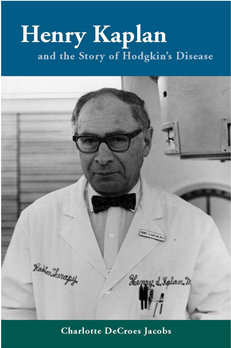

Charlotte DeCroes Jacobs' first biography, Henry Kaplan and the Story of Hodgkin's Disease, was published in 2010 by Stanford University Press with the paperback released in 2012. The book chronicles the life of an esteemed and controversial physician-scientist whose remarkable discoveries and passionate drive to cure cancer changed the course of cancer therapy.

One of the "Five Best books on doctors lives."The Wall Street Journal
Jacobs is currently working on her second biography, Jonas Salk: American Icon, Scientific Outcast and the scipt of an original musical comedy, Just My TYPE. Jacobs is a professor of Medicine at Stanford University and a practicing oncologist.